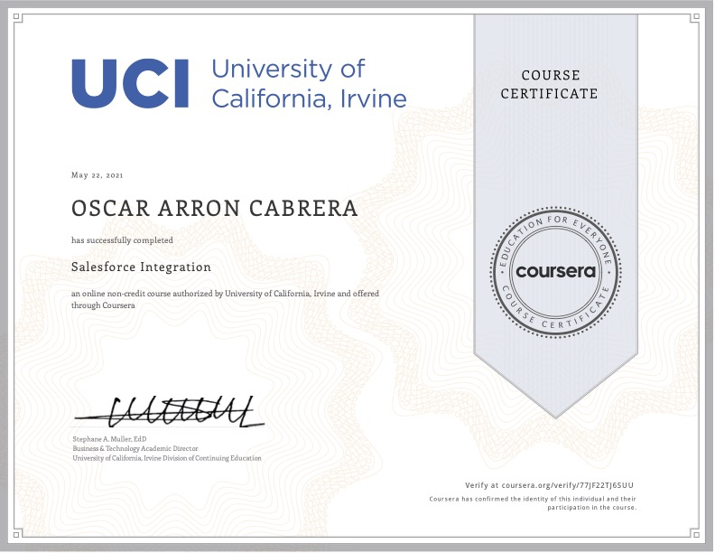

Salesforce Basics

In this course, you will learn about what the
world’s number one Customer Relationship Manager
(CRM) system has to offer. You will begin this
course by understanding the components that
Salesforce leverages to make it an optimal
system. You will learn about the basics in
Lightning for Sales, Community Cloud and
Marketing, and understanding how to secure your
Salesforce Organization and Manage Permissions.
These tools will serve as building blocks to
implementing Salesforce into any organization.
The course includes in-depth readings and
practical application activities within
Salesforce's Trailhead education platform, peer
discussion opportunities, demonstration videos,
and peer review assignments.
Salesforce Reporting
Salesforce Reporting focuses on how the
micro-level changes in Salesforce affect the
macro level of the user experience. In this
course, you will focus on creating custom
objects, field dependencies, and work flows to
track accounts or services. It is also important
that you maintain data clean for your
organization and you will work with creating
reports, managing data, and creating full
reports and dashboards. Lastly, you will focus
on your customer base with Salesforce Service
Cloud to maintain engagement through your
services. The course includes in-depth readings
and practical application activities within
Salesforce's Trailhead education platform, peer
discussion opportunities, demonstration videos,
and peer review assignments.
SalesforceIntergration

Salesforce Integration explores why data
management is so important, how Salesforce can
help organize and display reported data to gain
insight into trends and patterns, and how to
automate manual business procedures. Learners
will specifically practice creating custom
automation process, building work flows, and
performing data modeling. The course includes
in-depth readings and practical application
activities within Salesforce's Trailhead
education platform, peer discussion
opportunities, demonstration videos, and peer
review assignments.
Salesforce Capstone: Organization Intergration

In Salesforce Capstone: Organization Integration,
the final course of the Salesforce Fundamentals
Specialization, learners will complete the
Business Administration Specialist Superbadge as
their main project. This project asks learners
to combine all the skills and knowledge areas
that they have collected from the previous three
courses. Skill areas to be demonstrated include
cleaning and importing account data, adding
users and managing access, building email
templates for new marketing needs, configuring
UI tools for a new product type, generating
reports and dashboards, managing and applying
Chatter tools, and participating in the
deployment of Salesforce within an organization.
In addition to the project, the course includes
a peer discussion opportunity, a demonstration
video, and a peer review assignment. Completion
of the Salesforce Fundamentals specialization
and the Business Administration Specialist
Superbadge prepares learners to take the
Salesforce Administrator exam.